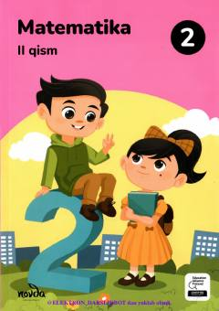

2M2-sinf o'quvchilari uchun matematika darsligining ikkinchi qismi.
Bu darslik umumiy o'rta ta'lim maktablarining 2-sinfi uchun mo'ljallangan matematika darsligining ikkinchi qismi bo'lib, 1000 gacha bo'lgan sonlar, yuzliklar, vaqtni o'lchash va matematik amallarni o'rgatadi. Darslik I. V. Repyova va Y. V. Zemlina tomonidan yozilgan va 2023-yilda Toshkentda nashr etilgan. Kitobda og'zaki va yozma topshiriqlar, mantiqiy masalalar hamda juft bo'lib ishlash uchun mashqlar mavjud.